第10章：完善你的应用程序¶
当你一直在努力使你的应用程序发挥作用的时候，你的设计师却一直在忙着想出一个惊人的、吸引人的设计。SwiftUI的一个优点是，只要你一直在封装视图并将它们分离出来，就很容易在不影响主要功能的情况下重新设计用户界面。
在本章中，你将为iPhone设计一些视图，确保它们在所有的iPhone设备上运行。设计师已经把你的元素移动了，并为定时器创建了一个新的模态屏幕。从本质上讲，这个应用程序的工作方式是一样的。
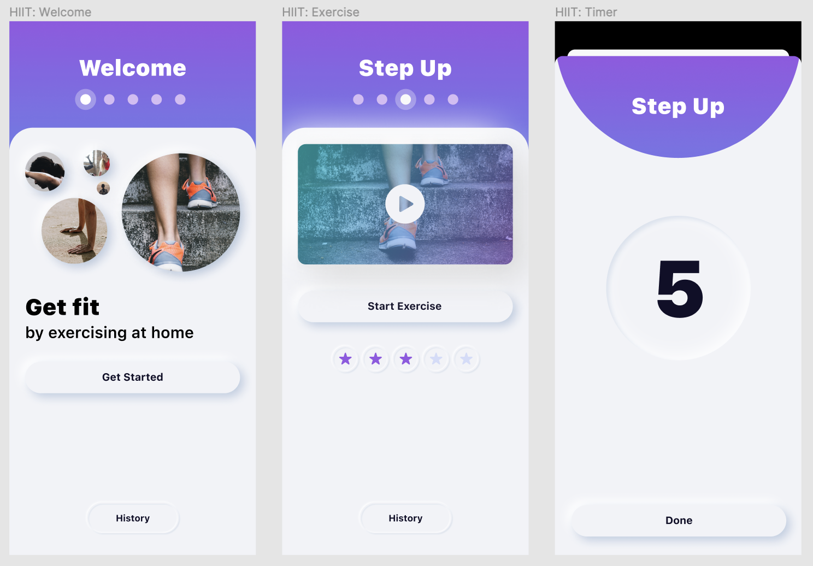
创建单个可重复使用的元素是一个好的开始。看一下设计，你必须要有风格：
- 一个凸起的按钮，用于开始、开始练习和完成。
- 一个压印的按钮，用于历史和练习评级。历史按钮是一个胶囊形状，而评级是圆形的。
- 计时器的内嵌视图背景。
启动程序包含你在资产目录中需要的颜色和图像。在WelcomeImages.swift中还有一些创建欢迎图片和文字的代码。
新形态¶
你将在本节中学习的技能：neumorphism。
这种背景和控件都是单一颜色的设计风格，被称为新形态。这是最近的一种设计趋势，你用阴影而不是用颜色来实现这种外观。
在过去的日子里，iPhone设计的高峰期是具有逼真表面的拟态界面，所以你有木头和织物的纹理，整个用户界面的表盘看起来很真实。Neumorphism这个名字来自New + Skeuomorphism，指的是极简主义与现实的阴影相结合。
基本上，你选择一个主题色。然后你选择该主题颜色的一个浅色调和一个深色调作为高光和阴影。你可以用红、绿、蓝（RGB）或色调、饱和度和亮度（HSL）来定义颜色。当在一种颜色中变换色调时，HSL是比较容易使用的模式，因为你保持相同的色调。上图中的基础色是色调：166，饱和度：54，亮度：59.54，明度：59。较浅的高光色具有相同的色相和饱和度，但亮度为71。 同样，较深的阴影色具有亮度：30.
创建一个新形态的按钮¶
你要创建的第一个按钮是Get Started raised按钮。
➤ 创建一个名为RaisedButton.swift的新SwiftUI视图文件。
将这两个结构替换为：
struct RaisedButton: View {
var body: some View {
Button(action: {}, label: {
Text("Get Started")
})
}
}
struct RaisedButton_Previews: PreviewProvider {
static var previews: some View {
ZStack {
RaisedButton()
.padding(20)
}
.background(Color("background"))
.previewLayout(.sizeThatFits)
}
}
在这里，你创建了一个普通的按钮，其预览的大小与按钮相适应。Assets.xcassets持有背景颜色"background"。
所有三个凸起的按钮上的文本样式是相同的。
➤ 在RaisedButton后面添加这段代码：
extension Text {
func raisedButtonTextStyle() -> some View {
self
.font(.body)
.fontWeight(.bold)
}
}
在这里，你要用粗体字来设计文本。
在RaisedButton中，向Text("Get Started")添加新的修改器：
.raisedButtonTextStyle()
将样式抽象为一个修改器，使你的应用程序更加强大。如果你想改变按钮的文本样式，只需改变raisedButtonTextStyle()，无论你在哪里使用这个样式，变化都会反映出来。
样式¶
本节将学习的技能：视图样式；按钮样式；阴影。
苹果公司知道你经常想给对象设置样式，所以它创建了一系列的样式协议供你定制。你可以在https://apple.co/3kzvD2e找到这个列表。
文本的样式不在这个列表中，这就是为什么你创建了你自己的视图修改器。
你已经在你的TabView上使用了这些样式中的一种，即内置的PageTabViewStyle。在文档中，似乎有许多按钮样式可用，然而这些样式大多适用于特定的操作系统。例如，你只能在macOS、tvOS和watchOS上使用BorderedButtonStyle。
您可以通过设置符合 ButtonStyle的结构来定制按钮。
➤ 将此新结构添加到RaisedButton.swift中：
struct RaisedButtonStyle: ButtonStyle {
func makeBody(configuration: Configuration) -> some View {
configuration.label
.background(Color.red)
}
}
这里你做一个简单的样式，给按钮文本一个红色背景。ButtonStyle有一个必要的方法：makeBody(configuration:)。配置给了你按钮的标签文本和一个布尔值isPressed，告诉你按钮目前是否被压住。
Swift
如果你想自定义按钮动作如何通过手势触发，你可以使用PrimitiveButtonStyle而不是ButtonStyle。
您可以使用此按钮样式来改变视图层次结构中的所有按钮。
➤ 打开HIITFitApp.swift，暂时将这个新的修改器添加到ContentView()：
.buttonStyle(RaisedButtonStyle())
你告诉ContentView，只要在层次结构中有一个按钮，它就应该使用你的自定义样式。
➤ 构建和运行。
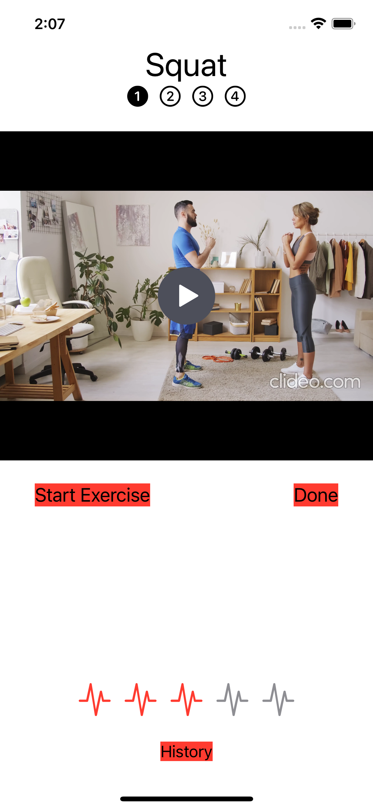
你的应用程序中的所有按钮都将使用你的新样式，背景为红色。注意，当你使用一个样式时，按钮文本的颜色会从默认的重点颜色蓝色变成主要颜色。这在浅色模式下是黑色，在深色模式下是白色。
➤ 你的应用程序中的按钮不会都使用相同的样式，因此从 HIITFitApp中删除buttonStyle(RaisedButtonStyle())。
➤ 打开RaisedButton.swift，在RaisedButton_Previews中为RaisedButton()添加一个新的修改器：
.buttonStyle(RaisedButtonStyle())
现在你可以在改变按钮风格时预览它。
➤ 在RaisedButtonStyle中，将makeBody(configuration:)改为：
func makeBody(configuration: Configuration) -> some View {
configuration.label
.frame(maxWidth: .infinity)
.padding([.top, .bottom], 12)
.background(
Capsule()
)
}
当你把frame(maxWidth:)设置为.infinity时，你要求视图占用其父辈给它的宽度。在标签文本的顶部和底部添加一些填充物。对于背景，使用Capsule形状。
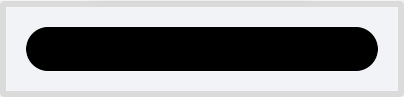
当你使用Shape，如Rectangle、Circle和Capsule时，默认的填充颜色是黑色，所以你要在你的neumorphic样式中改变它，以匹配背景颜色。
阴影¶
在添加阴影时，你有两种选择。你可以选择一个简单的全方位的阴影，有一个半径。半径是指要模糊到多少个像素。一个默认的半径为0的阴影会在物体周围放置一条微弱的灰线，这可能很有吸引力。
另一个选择是指定颜色、模糊半径的大小以及阴影与中心的偏移。
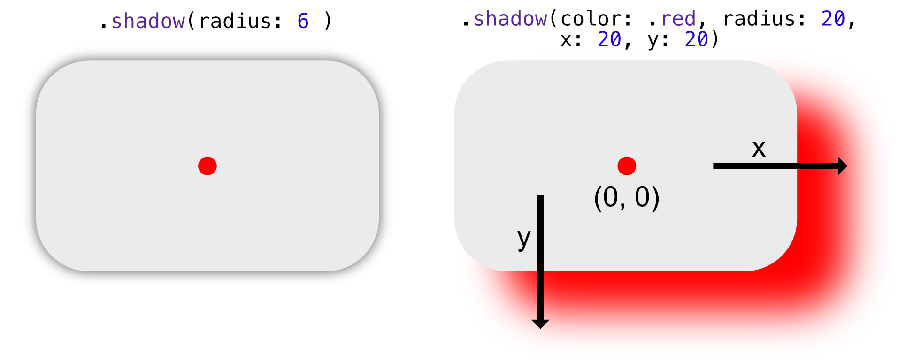
➤ 在makeBody(configuration:)中，为Capsule()添加新的修饰语：
.foregroundColor(Color("background"))
.shadow(color: Color("drop-shadow"), radius: 4, x: 6, y: 6)
.shadow(color: Color("drop-highlight"), radius: 4, x: -6, y: -6)
当你添加这些修改器时，观察按钮预览的变化。你的暗影向右和向下偏移了六个像素，而高光部分则向左和向上偏移了六个像素。当你添加高光时，按钮真的会从屏幕上跳出来。
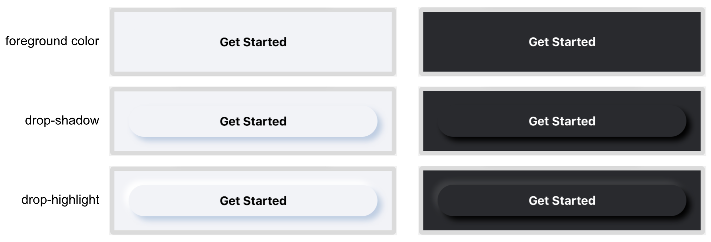
这些按钮在黑暗模式下也能工作，因为资产目录中的每一种颜色都有一个用于光明模式和黑暗模式的值。你会在第16章"为你的应用程序添加资产"中了解更多关于资产目录的信息。
抽象化你的按钮¶
你将在本节中学习的技能：将闭包传递给视图。
你的按钮已经完成了，所以你现在可以用这个按钮取代你的应用程序中的三个按钮。
➤ 打开WelcomeView.swift，找到Get Started的按钮代码。将按钮代码和所有的按钮修改器替换为：
Button(action: { selectedTab = 0 }) {
Text("Get Started")
.raisedButtonTextStyle()
}
.buttonStyle(RaisedButtonStyle())
.padding()
在这里，您可以使用您的新文本和按钮样式来创建您的新按钮。
➤ 预览按钮，尽管你还没有改变背景颜色，但它看起来很棒。
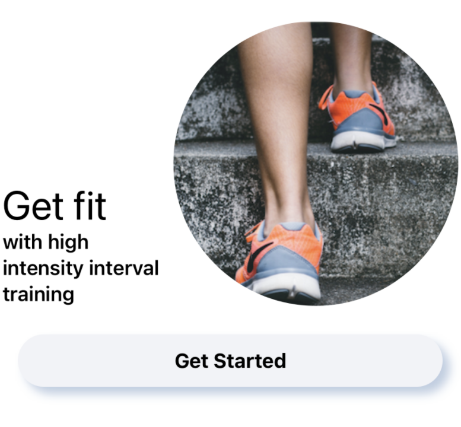
你可以用同样的方法改变其他两个按钮，或者你可以通过传入文本和动作使RaisedButton更加抽象。在上一章中，你已经熟悉了闭包，这里是你可能使用闭包的另一种方式。
➤ 打开RaisedButton.swift，将RaisedButton改为：
struct RaisedButton: View {
let buttonText: String
let action: () -> Void
var body: some View {
Button(action: {
action()
}, label: {
Text(buttonText)
.raisedButtonTextStyle()
})
.buttonStyle(RaisedButtonStyle())
}
}
你传入按钮文本和一个动作闭合。() -> Void类型的动作闭包不需要任何参数，也不返回。在Button的action闭包中，你执行action()。
➤ 在出现编译错误的预览中，将RaisedButton()改为：
RaisedButton(
buttonText: "Get Started",
action: {
print("Hello World")
})
当用户点击标有Get Started的按钮时，你的应用程序在控制台中打印出Hello World。(当然，预览不会打印任何东西，所以什么也不会显示）。
当一个闭包是方法的最后一个参数时，调用它的首选方式是使用特殊的尾部闭包语法。
➤ 将上述代码替换为：
RaisedButton(buttonText: "Get Started") {
print("Hello World")
}
使用尾部闭合语法，你可以移除action标签，并将闭合从方法的调用括号中取出。
打开WelcomeView.swift，为Get Started按钮创建一个新属性：
var getStartedButton: some View {
RaisedButton(buttonText: "Get Started") {
selectedTab = 0
}
.padding()
}
➤ 在body中，将之前的Get Started按钮代码，包括修饰语，改为：
getStartedButton
这段代码简洁了许多，但仍然是描述性的，而且功能与以前一样。
➤ 打开ExerciseView.swift，为Start Exercise按钮创建一个新属性：
var startExerciseButton: some View {
RaisedButton(buttonText: "Start Exercise") {
showTimer.toggle()
}
}
➤ 在body中，将Start Exercise按钮代码替换为：
startExerciseButton
You’ll move the Done button out of the view shortly.
压印的按钮¶
你将在本节中学习的技能：抚摸一个形状。
历史按钮将有一个胶囊形状的浮雕边框。这将与RaisedButton非常相似，只是你的浮雕按钮将能够包含任何内容，而不仅仅是文本。由于这个原因，你将只创建一个新的按钮样式，而不是一个新的按钮结构。
➤ 创建一个新的SwiftUI视图文件，名为EmbossedButton.swift。
➤ 完全删除EmbossedButton，因为你不需要它。
➤ 从RaisedButton.swift复制RaisedButtonStyle到EmbossedButton.swift，并将复制的RaisedButtonStyle改为EmbossedButtonStyle。
➤ 将EmbossedButton_Previews中的previews替换为：
static var previews: some View {
Button(
action: {},
label: {
Text("History")
.fontWeight(.bold)
})
.buttonStyle(EmbossedButtonStyle())
.padding(40)
.previewLayout(.sizeThatFits)
}
您使用浮雕按钮样式显示一个历史按钮。
➤ 添加一个黑暗模式预览。
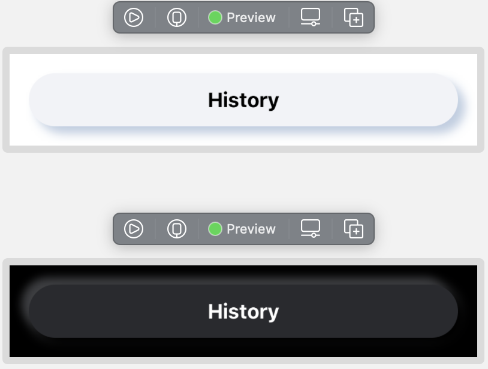
➤ 在EmbossedButtonStyle中，将makeBody(configuration:)替换为：
func makeBody(configuration: Configuration) -> some View {
let shadow = Color("drop-shadow")
let highlight = Color("drop-highlight")
return configuration.label
.padding(10)
.background(
Capsule()
.stroke(Color("background"), lineWidth: 2)
.foregroundColor(Color("background"))
.shadow(color: shadow, radius: 1, x: 2, y: 2)
.shadow(color: highlight, radius: 1, x: -2, y: -2)
.offset(x: -1, y: -1)
)
}
这里你用stroke(_:lineewidth:)来勾勒胶囊的轮廓，而不是用颜色来填充它。你将在第18章"路径和自定义形状"中学习更多关于形状和填充的知识。你将胶囊的轮廓偏移到笔画宽度的一半，这将使内容居中。
➤ 预览您的按钮：
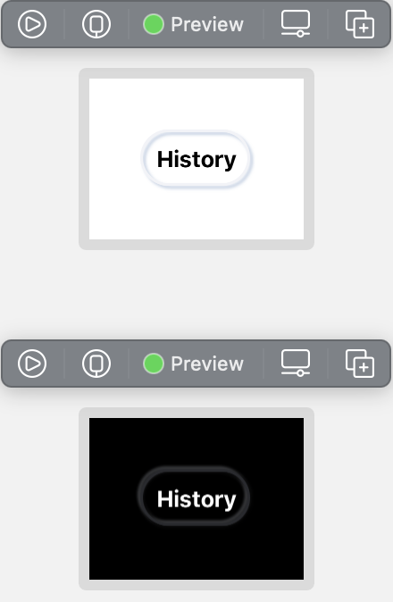
填充物看起来对文本来说是不够的，但不同的内容可能需要最小的填充物，所以你要把填充物添加到你为按钮提供的内容中，而不是在按钮样式里面。
你的胶囊状按钮现在可以在你的应用程序中使用了。然而，回顾一下本章开头的设计，设计师将评分放在了一个圆形的浮雕按钮中。你可以通过允许不同的形状来使你的按钮更加有用。
➤ 在EmbossedButton.swift中添加一个新的枚举：
enum EmbossedButtonShape {
case round, capsule
}
➤ 在EmbossedButtonStyle中，在makeBody(configuration:)下面，添加一个新方法：
func shape() -> some View {
Capsule()
}
在这里，你将根据传入的参数来决定形状。
➤ 在makeBody(configuration:)中，用Capsule()代替：
shape()
你会得到一个编译错误，因为stroke(_:lineWidth:)只允许用于实际的形状，如Rectangle或Capsule，而不允许用于some View。将你的光标放在.stroke(Color("background"), lineWidth: 2)上，反复按Option-Command-]键，将该行下移到shape()的Capsule()下面。编译错误就会消失。
➤ 给EmbossedButtonStyle添加一个新属性：
var buttonShape = EmbossedButtonShape.capsule
如果不提供形状，压印的按钮将是一个胶囊。
➤ 将shape()改为：
func shape() -> some View {
switch buttonShape {
case .round:
Circle()
.stroke(Color("background"), lineWidth: 2)
case .capsule:
Capsule()
.stroke(Color("background"), lineWidth: 2)
}
}
在这里你返回所需的形状。不幸的是，你得到了一个编译错误。你将在第2节中更深入地研究这个问题，但现在，你只需要理解编译器期望some View是一种类型的视图。你要返回的是Circle或Capsule，这是在运行时决定的，所以编译器在编译时不知道some View应该是哪种类型。
@ViewBuilder¶
你将在本节中学习的技能：视图构建器属性。
有几种方法来处理这个问题。一种方法是从shape()返回一个Group并将switch置于Group内。
另一种方法是使用函数生成器@ViewBuilder。各种内置视图，如HStack和VStack可以显示各种类型的视图，它们通过使用@ViewBuilder实现。不久，你将创建你自己的容器视图，在这里你可以像VStack那样堆积其他视图。
➤ 在func shape() -> some View {上面添加这个：
@ViewBuilder
你的代码现在神奇地被编译了。
在内部，@ViewBuilder最多吸收十个视图，并将它们合并成一个TupleView。一个元组是一个由几个项目组成的松散的类型。
@ViewBuilder有十个buildBlock(...)方法，根据有多少个包含的视图，调用相应的方法。你有没有试过在一个VStack中添加超过十个视图？因为在ViewBuilder中只有十个方法来建立视图，你会得到一个编译错误。调用中的额外参数。
这是buildBlock(...)的其中一个声明，它接收了七个包含的视图，并返回由这七个视图组成的TupleView：
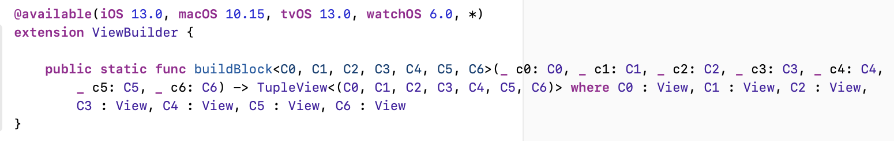
其他九个buildBlock(...)方法是一样的，只是传入的视图数量不同。
➤ 在EmbossedButton_Previews中，将Light Mode.buttonStyle(EmbossedButtonStyle())改为：
.buttonStyle(EmbossedButtonStyle(buttonShape: .round))
➤ 预览按钮，这就是Light模式的结果：
圆的直径取自按钮的高度。
➤ 为了直观地看到这一点，在shape()中，单击Circle()以在预览中查看圆形的轮廓：
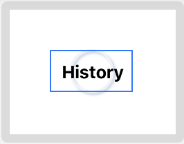
圆的大小应该是按钮内容的宽度或高度中较大的一个。你已经用GeometryReader找出了一个视图的大小，这就是你在这里要用的。
➤ 在makeBody(configuration:)中，将shape()嵌入到GeometryReader中，并为shape添加一个size参数。这就是background(_:)的内容：
.background(
GeometryReader { geometry in
shape(size: geometry.size)
.foregroundColor(Color("background"))
.shadow(color: shadow, radius: 1, x: 2, y: 2)
.shadow(color: highlight, radius: 1, x: -2, y: -2)
.offset(x: -1, y: -1)
})
➤ 将func shape() -> some View改为：
func shape(size: CGSize) -> some View {
你现在传递给shape(size:)的是按钮内容的大小，所以你可以确定宽度或高度中较大的。
➤ 在shape(size:)中，给Circle()添加这个修饰符：
.frame(
width: max(size.width, size.height),
height: max(size.width, size.height))
在这里，您可以将框架设置为宽度或高度中较大的那个。
➤ 预览按钮，可以看到圆圈的直径与按钮内容的宽度相同，但从顶部开始。
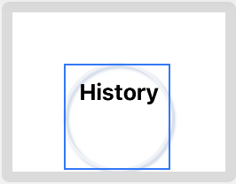
➤ 在前一个修饰符之后添加这个：
.offset(x: -1)
.offset(y: -max(size.width, size.height) / 2 +
min(size.width, size.height) / 2)
你在X方向上将圆偏移了一半的笔画宽度。在Y方向上，你把圆偏移一半的直径加上一半的宽度或高度中的较小者。
你的压花按钮现在已经完成，可以使用了。
➤ 打开WelcomeView.swift并添加一个新的属性：
var historyButton: some View {
Button(
action: {
showHistory = true
}, label: {
Text("History")
.fontWeight(.bold)
.padding([.leading, .trailing], 5)
})
.padding(.bottom, 10)
.buttonStyle(EmbossedButtonStyle())
}
这里你使用Button的另一种形式，这样你就可以格式化按钮的内容。你使用默认的胶囊形状作为按钮的样式。
➤ 在body中，替换：
Button("History") {
showHistory.toggle()
}
.sheet(isPresented: $showHistory) {
HistoryView(showHistory: $showHistory)
}
.padding(.bottom)
为:
historyButton
.sheet(isPresented: $showHistory) {
HistoryView(showHistory: $showHistory)
}
➤ 复制var historyButton的代码，打开ExerciseView.swift，将代码粘贴到ExerciseView中。
➤ 在body中，替换：
Button("History") {
showHistory.toggle()
}
为:
historyButton
注意，当你用描述视图的属性来替换body的按钮代码时，代码变得更加可读。
➤ 在RatingView.swift中，在body中，用新的圆形按钮替换ForEach的内容：
Button(action: {
updateRating(index: index)
}, label: {
Image(systemName: "waveform.path.ecg")
.foregroundColor(
index > rating ? offColor : onColor)
.font(.body)
})
.buttonStyle(EmbossedButtonStyle(buttonShape: .round))
.onChange(of: ratings) { _ in
convertRating()
}
.onAppear {
convertRating()
}
你在新的浮雕按钮内嵌入图像作为标签，这次你使用了圆形的浮雕样式。
➤ 建立和运行，欣赏你的新按钮：
ViewBuilder 容器视图¶
本节将学习的技能：容器视图。
看一下本章开头的设计，标签视图的标题有一个紫色/蓝色的渐变背景，视图的其他部分有一个灰色的背景和圆角。
你可以把这个灰色背景变成一个容器视图，并在里面嵌入WelcomeView和ExerciseView。容器视图将是一个@ViewBuilder。它将接受任何种类的视图内容作为参数，并将自己的格式化添加到视图栈中。这就是HStack和VStack的工作方式。
➤ 创建一个名为ContainerView.swift的新SwiftUI视图文件。
➤ 将ContainerView: View{改为：
struct ContainerView<Content: View>: View {
var content: Content
Content是一个泛型。泛型使Swift非常灵活，可以创建对多种类型工作的方法，而不会出现编译错误。在这里，Content采用的是你初始化视图的类型。你将在第15章"结构、类和协议"中学习更多关于泛型的知识。
➤ 为ContainerView创建一个初始化器：
init(@ViewBuilder content: () -> Content) {
self.content = content()
}
你会认出初始化器的参数是一个闭包。它是一个没有参数的闭包，并返回一个通用值Content。在初始化器中，你运行闭包并将闭包的结果放在ContainerView的本地存储中。
你用@ViewBuilder属性来标记闭包方法，允许它返回任意类型的多个子视图。
➤ 将body改为：
var body: some View {
content
}
这里的视图是初始化器执行的内容关闭的结果。
现在你可以在预览中测试你的容器视图了。
➤ 将ContainerView_Previews改为：
struct Container_Previews: PreviewProvider {
static var previews: some View {
ContainerView {
VStack {
RaisedButton(buttonText: "Hello World") {}
.padding(50)
Button("Tap me!") {}
.buttonStyle(EmbossedButtonStyle(buttonShape: .round))
}
}
.padding(50)
.previewLayout(.sizeThatFits)
}
}
你创建了一个由两个按钮组成的VStack。你向ContainerView发送VStack作为content关闭参数。然后ContainerView显示了运行封闭content的结果。
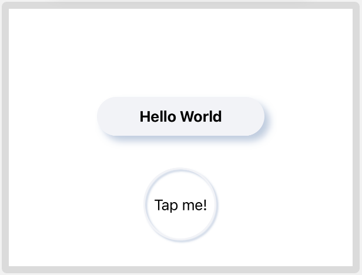
很明显，这个容器视图只返回VStack，所以目前用处不大。不过你可以让视图构建器变得相当复杂。在第21章"愉悦的用户体验--最后的修饰"的支持代码中，你可以找到一个RenderableView视图构建器，它观察所包含的视图，并在触发时对视图进行截图。
你的视图构建器在这里会对背景进行格式化。
➤ 在ContainerView中，用body代替：
var body: some View {
ZStack {
RoundedRectangle(cornerRadius: 25.0)
.foregroundColor(Color("background"))
VStack {
Spacer()
Rectangle()
.frame(height: 25)
.foregroundColor(Color("background"))
}
content
}
}
这里你用资产目录中的背景色创建一个圆角矩形。您不希望底部的角是圆的，因此您在底部添加一个具有尖角的矩形来掩盖角。
➤ 预览该视图，您的容器视图就完成了。最好不要在实际的容器视图中添加不必要的填充物，因为这会降低灵活性。在这里，你在预览时有填充物。当你不久后使用容器视图时，你将使它直接到达边缘。
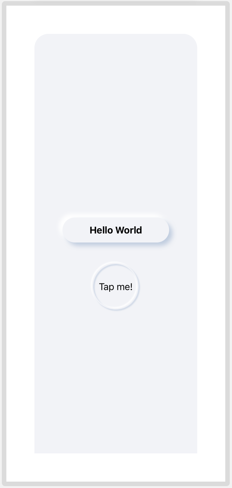
设计WelcomeView。¶
本节将学习的技能：用视图属性进行重构；安全区。
➤ 打开WelcomeImages.swift。这是一个包含在启动项目中的文件，它包含了一些图片和格式化的文本，可以在WelcomeView中使用。
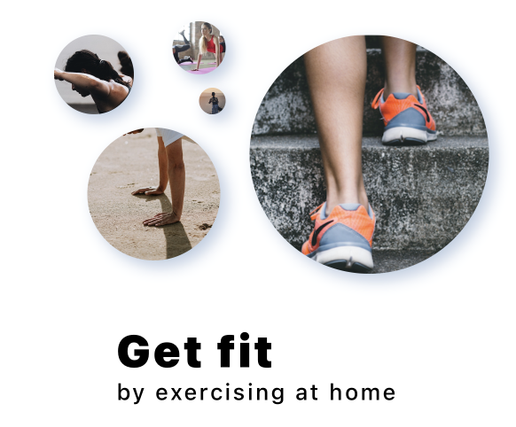
在welcomeText中需要注意的一个有趣的格式化提示是修改器.kerning(2)中的文字字符。这使你可以控制字母之间的间距。
➤ 打开WelcomeView.swift，将body替换为：
var body: some View {
GeometryReader { geometry in
VStack {
HeaderView(
selectedTab: $selectedTab,
titleText: "Welcome")
Spacer()
// container view
VStack {
WelcomeView.images
WelcomeView.welcomeText
getStartedButton
Spacer()
historyButton
}
}
.sheet(isPresented: $showHistory) {
HistoryView(showHistory: $showHistory)
}
}
}
这里你使用WelcomeImages.swift中的图片和文字。只要你能把你的代码重构成小块，你就应该这样做。这段代码更清晰，更容易阅读。你在GeometryReader中嵌入顶部的VStack，这样你就能确定容器视图的可用尺寸。
➤ 将第二个VStack--包含图片和文本的VStack--嵌入到你的ContainerView中，并添加修改器以确定其高度：
// container view
ContainerView {
VStack {
...
}
}
.frame(height: geometry.size.height 0.8)
使用GeometryReader给出的尺寸，容器视图将占用80%的可用空间。你将在第20章"愉悦的用户体验 - 布局"中进一步了解GeometryReader。
➤ 打开ContentView.swift，在iPhone 12 Pro Max和iPod Touch上预览你的应用程序。这些是最大和最小的屏幕（不考虑iPad），你要确保你的应用程序在所有的iPhone上看起来都很棒。
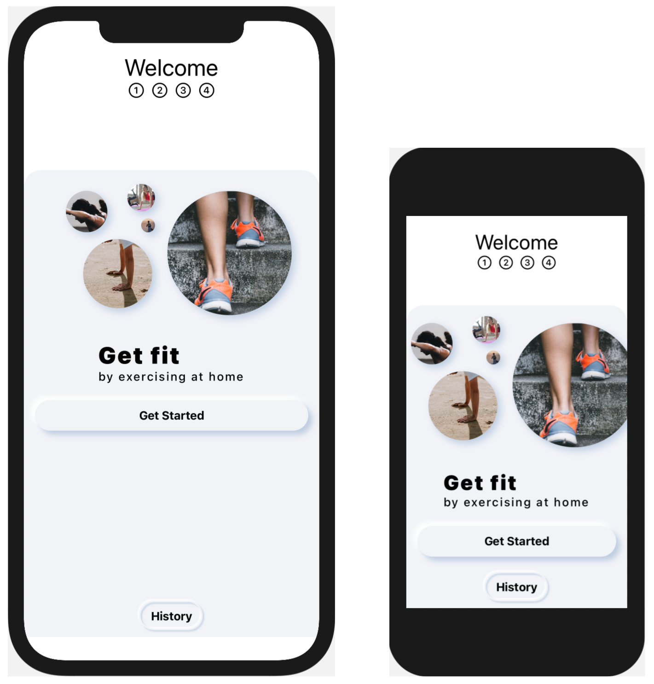
安全区¶
在iPhone 12上，安全区的底部有一个缺口，灰色的背景颜色并没有延伸到底部边缘。任何没有实体Home键的iPhone都有这个安全区域，即底部的黑条，你在那里向上滑动以离开应用程序。
当你分层处理背景颜色时，使用修改器edgesIgnoringSafeArea(_:)往往是安全的。但如果你在这里对你的TabView使用这个修改器，结果就会是这样：
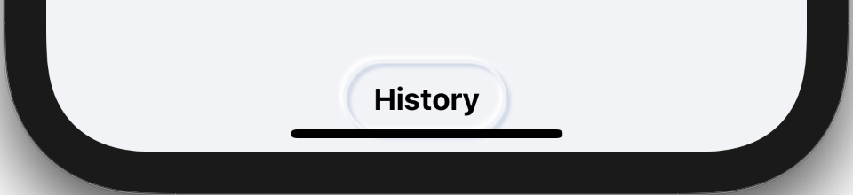
History按钮会离底边太近，无法向上滑动。你可以去WelcomeView，把历史记录按钮垫起来，但这样按钮在iPod Touch上也会被垫起来，因为iPod Touch不需要一个安全区域。有几个解决方案。你可以在TabView下面分层一个Rectangle，就像你在ContainerView中做的那样，来覆盖隐藏区域，并忽略安全边缘。
由于你要在TabView后面添加一个渐变背景，你可以在渐变中包含灰色背景色，然后在分层的背景色上忽略安全边缘。
梯度¶
本节中你将学习的技能：梯度视图
SwiftUI使使用梯度变得非常容易。你只需在一个数组中定义渐变的颜色。你将使用资产目录中预定义的颜色，使用一个可爱的紫色到蓝色的梯度。
➤ 创建一个名为GradientBackground.swift的新SwiftUI视图文件。
➤ 将预览改为：
struct GradientBackground_Previews: PreviewProvider {
static var previews: some View {
GradientBackground()
.frame(width: 300, height: 300)
.previewLayout(.sizeThatFits)
}
}
你只需要对梯度进行一个小的预览。
➤ 为GradientBackground添加一个新属性：
var gradient: Gradient {
Gradient(colors: [
Color("gradient-top"),
Color("gradient-bottom")
])
}
这定义了渐变的颜色。
➤ 将body改为：
var body: some View {
LinearGradient(
gradient: gradient,
startPoint: .top,
endPoint: .bottom)
.edgesIgnoringSafeArea(.all)
}
你从顶部开始渐变，继续向下到底部。如果你希望渐变是对角线的，你可以使用.topLeading作为起点，.bottomTrailing作为终点。因为这个渐变只用作背景色，你可以忽略安全区域，渐变会延伸到所有屏幕边缘。

➤ 你还要用灰色来掩盖安全区，所以要把它列入颜色列表：
Gradient(colors: [
Color("gradient-top"),
Color("gradient-bottom"),
Color("background")
])
这个结果给出了一个不太令人愉快的紫色到蓝色的梯度。
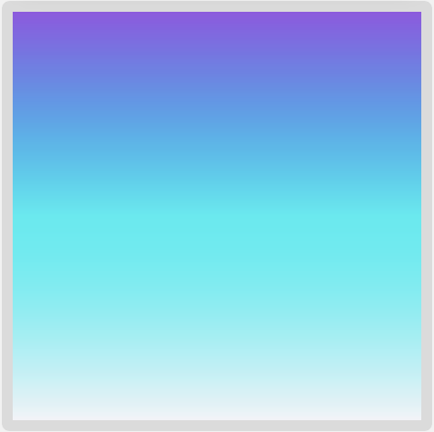
您可以使用止点来控制渐变的位置。
➤ 将gradient替换为：
var gradient: Gradient {
let color1 = Color("gradient-top")
let color2 = Color("gradient-bottom")
let background = Color("background")
return Gradient(
stops: [
Gradient.Stop(color: color1, location: 0),
Gradient.Stop(color: color2, location: 0.9),
Gradient.Stop(color: background, location: 0.9),
Gradient.Stop(color: background, location: 1)
])
}
在这里，你在90%的渐变中使用紫色到蓝色。在90%的标记处，你在渐变的其余部分改用背景色。由于你的两个色块紧挨着，你得到的是一条尖锐的线条，而不是一个渐变。如果你想要一个条纹状的背景，你可以通过这种方式使用色块来实现。
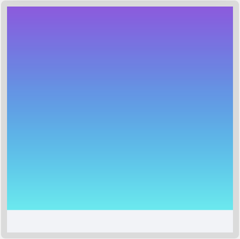
➤ 打开ContentView.swift，添加你的梯度背景。
➤ 将TabView嵌入到ZStack中并添加你的背景：
ZStack {
GradientBackground()
TabView(selection: $selectedTab) {
...
}
...
}
➤ 在几个iPhone尺寸上预览你的结果。还要确保检查你的布局是否尽可能地使用无障碍动态类型。有了这种布局，即使设置为无障碍大号，iPod Touch仍然可以使用。
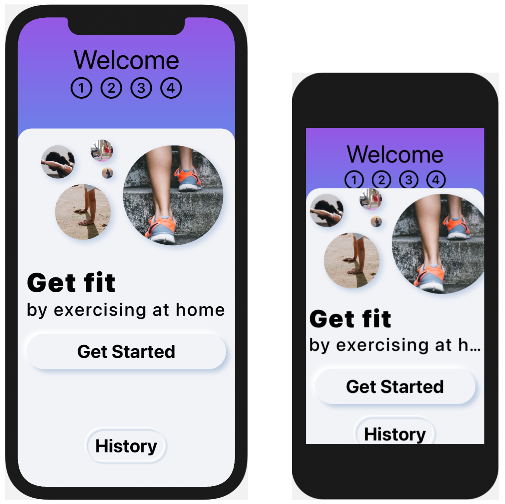
挑战¶
你的挑战是继续设计风格。首先设计HeaderView的样式。
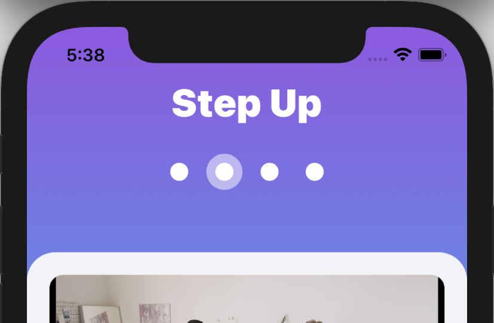
功能将保持不变，但你将有圆圈而不是数字。圆圈后面有一个褪色的圆圈表示当前页面。你可以用修改器opacity(:)来实现透明度，其中不透明度在0和1之间。如果你的修改没有在预览中显示出来，你可能需要在模拟器中建立和运行来看到你的修改。
ExerciseView在渐变背景下看起来不是很好，所以把它嵌入到ContainerView中，就像在WelcomeView中那样。
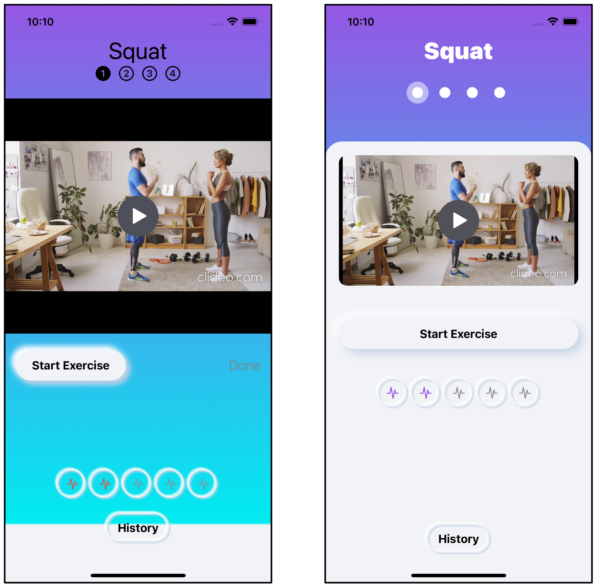
挑战目录中提供的项目包含一个完全设计好的应用程序，它充分利用了你在本章中设计的按钮样式。请看。
Get Started按钮：当你点击它时，它就会出现缩进。- 历史视图：有两个，一个是列表，一个是柱状图。为了制作历史条形图，在
Date()上有一些扩展方法，可以计算出过去七天的数组，以及日期和月份的格式。 - 计时器视图：现在是一个模式，标题是一个圆形的切口。
关键点¶
- 不一定能花钱雇一个设计师，但你肯定应该花时间使你的应用程序尽可能地吸引人和友好。尝试各种设计，并提供给你的测试人员，征求他们的意见。
- 新形态主义是一种简单的风格，效果很好。在https://dribbble.com跟上设计师的趋势。
- 风格协议允许你定制各种视图类型，以适应你所期望的设计。
- 使用
@ViewBuilder，你可以从方法和属性返回不同类型的视图。很容易创建具有附加样式或功能的自定义容器视图。 - 你可以在安全区分层背景色，但不要在那里放置任何你的用户接口。
- 梯度是创造突出设计的一个简单方法。你可以在https://uigradients.com找到有趣的梯度。